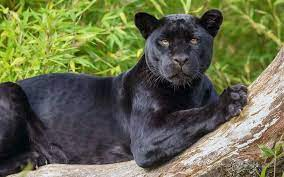

Habitad

A grandes rasgos, son las selvas tropicales de América las que albergan el hábitat natural de la especie; aunque es apta para vivir en la montaña, la posible idea de tener que pelearse con el puma por dicho territorio hace que ni siquiera lo intente, pues es bastante factible que pierda.
Caracteristicas
Mide de 1 a 1,5 m de longitud
- su cola mide entre 75 y 100 cm
- Su altura oscila entre los 45 y 62 cm
- puede alcanzar los 90 kg de peso.
- El pelaje es corto y ralo
menú